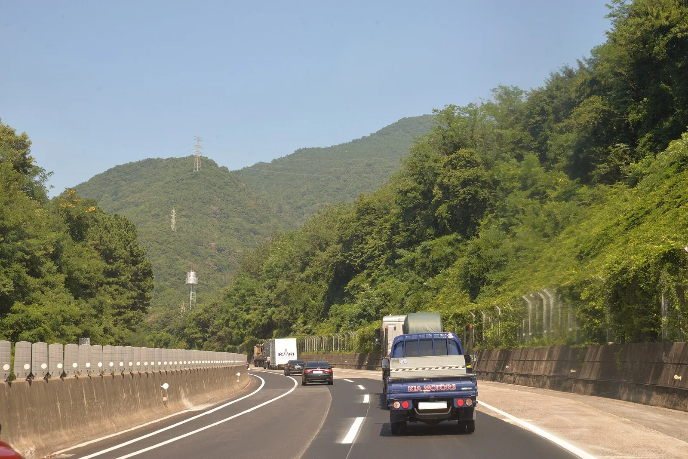
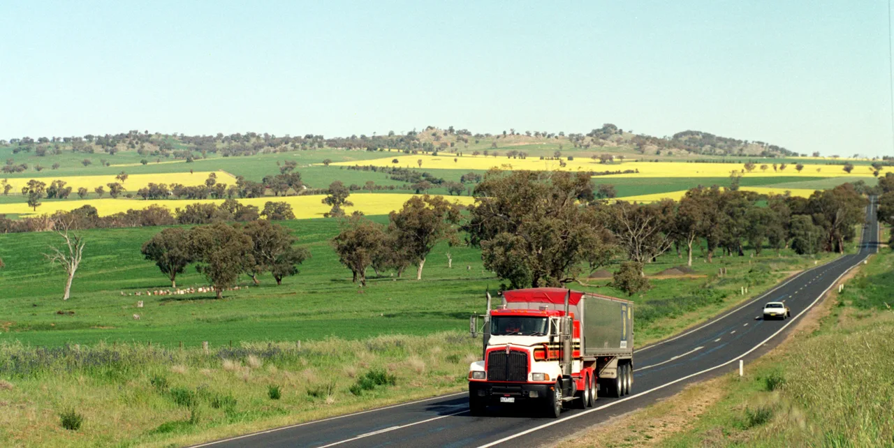
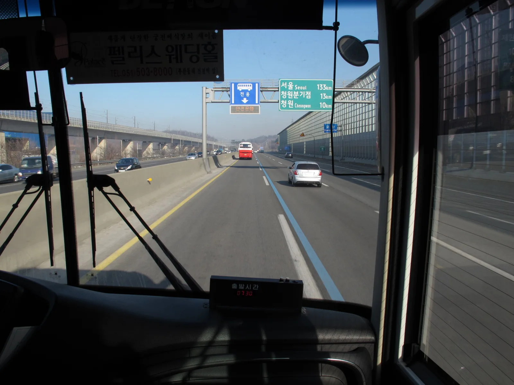

▲ 편도 3차로 고속도로. 컨테이너 화물차가 오른쪽 차로를 지키고 있다
고속도로 1차로는 주행하라고 만든 차로가 아닙니다.
추월할 때 잠깐 쓰고, 끝나면 돌아오라고 비워둔 자리입니다.
그래서 규정 속도를 지키며 1차로를 계속 달려도 위반이 됩니다. 과속하지 않았다는 것과 지정차로를 지켰다는 것은 별개입니다.
1. 1차로는 비워두는 자리다
지정차로제의 출발점은 단순합니다. 빠른 차가 느린 차를 추월할 통로를 항상 열어두자는 것입니다.
그래서 1차로는 '추월차로'입니다. 추월할 때 들어가고, 추월이 끝나면 즉시 주행차로로 돌아와야 합니다.
📍 자주 나오는 반론 — "뒤에 차가 없는데요"
뒤따르는 차의 유무는 기준이 아닙니다. 추월이라는 목적이 끝났는데 계속 1차로에 머무르면 그 자체로 위반입니다. 규정 속도를 지키고 있어도 마찬가지입니다. 속도위반과 지정차로 위반은 별개의 항목입니다.
2. 차로 수에 따른 기준
고속도로는 편도 차로 수에 따라 기준이 달라집니다.
| 구분 | 1차로 | 나머지 차로 |
|---|---|---|
| 편도 2차로 | 모든 자동차의 추월용 | 2차로 — 모든 자동차의 주행차로 |
| 편도 3차로 이상 | 승용차·중형 이하 승합차의 추월용 | 왼쪽차로: 승용·중형 이하 승합 오른쪽차로: 대형 승합·화물·특수·건설기계 |
편도 3차로 이상에서 화물차는 1차로에 아예 들어갈 수 없습니다. 추월을 하더라도 자기 주행차로 바로 왼쪽 차로까지만 쓸 수 있습니다.

▲ 차로마다 통행할 수 있는 차종이 정해져 있다 ⓒ Wikimedia Commons

▲ 일반도로에서도 화물차와 대형 승합차는 오른쪽 차로를 쓴다 ⓒ Don Graham, Wikimedia Commons (CC BY-SA 2.0)
3. 일반도로는 기준이 다르다
고속도로가 아닌 일반도로에서는 '왼쪽차로·오른쪽차로'로 나눕니다.
| 구분 | 통행 가능 차종 |
|---|---|
| 왼쪽차로 | 승용차, 경형·소형·중형 승합차 |
| 오른쪽차로 | 대형 승합차, 화물차, 특수차, 건설기계, 이륜차·원동기장치자전거 |
📍 편도 3차로 일반도로는 어떻게 나누나
차로를 정확히 반으로 나눌 수 없기 때문에, 1차로가 왼쪽차로, 2·3차로가 오른쪽차로가 됩니다. 홀수 차로에서는 가운데가 오른쪽에 포함된다고 기억하면 됩니다.

▲ 편도 3차로 이상에서 화물차는 1차로에 진입할 수 없다 ⓒ Don Graham, Wikimedia Commons (CC BY-SA 2.0)
4. 위반하면 얼마인가
| 도로 | 차종 | 범칙금 | 과태료 | 벌점 |
|---|---|---|---|---|
| 고속도로 자동차전용도로 | 승합·4톤 초과 화물 | 5만 원 | 6만 원 | 10점 |
| 승용·4톤 이하 화물 | 4만 원 | 5만 원 | 10점 | |
| 일반도로 | 승용·승합 | 3만 원 | 4만 원 | 10점 |
| 이륜차 | 2만 원 | 3만 원 | 10점 |
금액보다 벌점이 더 신경 쓰이는 항목입니다. 벌점 10점은 한 번으로 면허에 영향을 주지는 않지만, 1년간 누적 40점이 되면 면허정지 대상이 됩니다.
📖 근거 조문
· 통행 기준 — 「도로교통법」 제60조, 같은 법 시행규칙 제39조 및 별표 9
· 고속도로 위반 — 「도로교통법」 제156조제3호, 시행령 별표 8 제39호, 시행규칙 별표 28
· 일반도로 위반 — 「도로교통법」 제156조제1호, 시행령 별표 8 제45호, 시행규칙 별표 28
📍 범칙금과 과태료의 차이
범칙금은 운전자가 특정된 경우(현장 단속)에 부과되며 벌점이 함께 붙습니다. 과태료는 무인 단속처럼 운전자가 특정되지 않은 경우 차량 소유자에게 부과되며 벌점이 없습니다. 금액은 과태료가 조금 더 비쌉니다. 벌점을 피하려고 과태료를 택하는 사람이 있는 이유입니다.
5. 1차로를 계속 달려도 되는 경우
예외가 있습니다. 도로가 막혀 흐름 자체가 느려진 경우입니다.
✅ 1차로 계속 주행이 허용되는 조건
· 차량 통행량 증가 등으로 부득이하게 시속 80km 미만으로 운행할 수밖에 없는 경우
· 이 경우에도 승용차와 중형 이하 승합차에 한합니다
· 화물차는 해당하지 않습니다 — 자기 주행차로 바로 왼쪽까지만
즉 정체 구간에서 1차로에 있는 것은 문제가 아닙니다. 반대로 흐름이 원활한데 1차로를 점유하고 정속 주행하는 것이 단속 대상입니다.
6. 헷갈리는 제도들 — 무엇이 다른가
고속도로에는 비슷해 보이는 차로 규정이 여럿 있습니다. 서로 다른 제도입니다.

▲ 버스전용차로는 지정차로제와 별개의 제도다 ⓒ Wikimedia Commons
| 제도 | 내용 |
|---|---|
| 지정차로제 | 차종별로 쓸 수 있는 차로가 정해져 있다 |
| 버스전용차로 | 지정된 시간대에 버스 등만 통행 — 별도 제도 |
| 갓길 | 고장·응급 상황용 — 주행 금지 |
| 가변차로 | 시간대에 따라 통행 방향이 바뀐다 |
버스전용차로가 운영되는 구간에서는 차로 번호가 한 칸씩 밀린 것처럼 느껴집니다. 이때 헷갈려서 전용차로에 들어가면 별도의 위반이 됩니다. 노면 표시와 시간대 안내를 함께 보는 습관이 필요합니다.
7. 정리
1차로는 추월할 때 쓰고 비워두는 자리입니다. 규정 속도를 지켰다는 것이 면책 사유가 되지 않습니다.
편도 3차로 이상에서는 화물차와 대형 승합차가 오른쪽 차로를 씁니다. 이 구분이 지켜져야 추월 통로가 유지됩니다.
고속도로 위반 시 승용차 기준 범칙금 4만 원과 벌점 10점입니다. 다만 통행량 때문에 80km/h 미만으로 갈 수밖에 없는 상황이라면 1차로 주행이 허용됩니다.